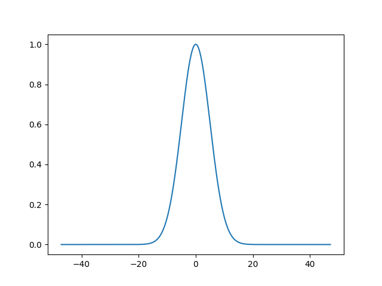
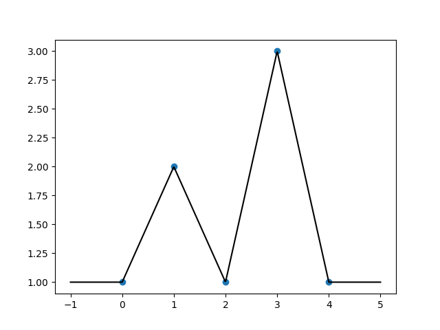
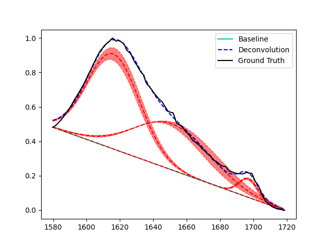

Usage
PyPeakify provides a high-level interface for performing peak deconvolutions of various spectra. The primary objects used in this process are Peak objects, which represent individual peaks in the spectrum, and Deconvolution objects, which represent the optimization problem of fitting a sum of peaks to a spectrum. Additionally, Baseline objects can be used to represent the background signal in the spectrum, and can be passed to a Deconvolution object to correct the spectrum before fitting the peaks. This guide will walk through the basic usage of these objects, and provide examples of their use on actual data.
Peaks
When starting a deconvolution, often the user will have known information about hard or soft constraints on a peak's width, amplitude, and position, and may even have a good guess of what the true parameters are. The Peak object encapsulates all these things.
import matplotlib.pyplot as plt
import numpy as np
from pypeakify.peak import Peak
peak = Peak('gaussian',
width=5, amplitude=1, position=0,
constrain_width=(0, np.inf), constrain_amplitude=(0, np.inf), constrain_position=(-2, 2))
plt.figure()
peak.plot(plt.gca())
plt.show()
Output

In the above example, we have defined a Gaussian peak with an initial width of 5, amplitude of 1, and position of 0. Additionally, we have also set optimization constraints on all three parameters. Note the use of np.inf to represent no upper bound on with and amplitude. The corresponding representation of no lower bound is simply -np.inf.
Baselines
Baseline correction is a pre-processing technique used to remove the background signal from a spectrum. PyPeakify provides a few options and a simple interface to apply baseline correction to a spectrum. Because Baseline objects are themselves simply callable objects of the form baseline(x: np.ndarray) -> np.ndarray, custom baseline corrections can be easily defined and passed to a Deconvolution object.
import matplotlib.pyplot as plt
import numpy as np
from pypeakify.baseline import PiecewiseLinearBaseline
x_nodes = np.arange(5)
y_nodes = np.array([1, 2, 1, 3, 1])
baseline = PiecewiseLinearBaseline(x_nodes, y_nodes)
x = np.linspace(-1, 5, 500)
plt.figure()
plt.scatter(x_nodes, y_nodes)
plt.plot(x, baseline(x), c='k')
plt.show()
Output

In the above example, we have defined a piecewise linear baseline correction with 5 nodes. The baseline is defined by the points (0, 1), (1, 2), (2, 1), (3, 3), and (4, 1). The baseline is then plotted over the range [-1, 5]. These baselines are manually specified and, once constructed, can be passed to a Deconvolution object.
Deconvolutions
Once a baseline and peaks have been initialized, a Deconvolution object can be created to fit the peaks to the spectrum.
When fit, a deconvolution object modifies copies of the peak objects to fit the spectrum. The original peak objects are not modified, and can be used as initial conditions for other deconvolutions. If a deconvolution object that has been fit once is refit to a different spectrum, the current state of the peaks will be used as the initial guess in the optimization problem.
import matplotlib.pyplot as plt
import numpy as np
from pypeakify.deconvolution import Deconvolution
... # Load a spectrum, initialize peaks and baseline
deconv = Deconvolution([peak1, peak2, peak3], baseline)
deconv.fit(x, y)
In the above example, we have created a Deconvolution object with three peaks and a baseline correction object. The peaks are then fit to the spectrum defined by the arrays x and y. The fit method modifies the peaks in place to fit the spectrum, and the Deconvolution object can then be used to plot the spectrum and the fitted peaks.
Full Example
Let's take a look at a full working example of deconvolving the Amide I region of an FTIR spectra from a Bombyx Mori silkworm degummed silk sample.
import matplotlib.pyplot as plt
import numpy as np
from pypeakify.peak import Peak
from pypeakify.baseline import PiecewiseLinearBaseline
from pypeakify.deconvolution import Deconvolution
from pypeakify.filereader import import_ascii_url, crop, normalize_data, nearest_points
url = 'https://raw.githubusercontent.com/yargerlab/Data/main/FTIR/2023_07_10_B_Mori_degummed_silk_1.dpt'
# Load, crop, and normalize data
crop_range = [1580, 1720]
data = import_ascii_url(url)
data = crop(*data, crop_range)
x, y = normalize_data(*data, crop_range)
# Initialize peaks
p1 = Peak('gaussian',
width=5, amplitude=1, position=1618,
constrain_width=(0, np.inf), constrain_amplitude=(0, np.inf), constrain_position=(1616, 1622))
p2 = Peak('gaussian',
width=5, amplitude=1, position=1650,
constrain_width=(0, np.inf), constrain_amplitude=(0, np.inf), constrain_position=(1645, 1655))
p3 = Peak('gaussian',
width=5, amplitude=1, position=1698,
constrain_width=(0, np.inf), constrain_amplitude=(0, np.inf), constrain_position=(1697, 1699))
# Create simple linear baseline
x_nodes = np.array([x[0], x[-1]])
y_nodes = np.array([y[0], y[-1]])
baseline = PiecewiseLinearBaseline(x_nodes, y_nodes)
# Create deconvolution
deconv = Deconvolution([p1, p2, p3], baseline)
deconv.fit(x, y)
# Plot deconvolution
plt.figure()
plt.plot(x, baseline(x), c='c', label='Baseline')
deconv.plot(plt.gca(), x, y, show_error=True)
plt.legend()
plt.show()
Output
Peak Type Width Amplitude Position
----------- -------- ----------- ----------
gaussian 15.6796 0.552349 1616
gaussian 22.9313 0.268229 1650.96
gaussian 5.67015 0.107615 1697
